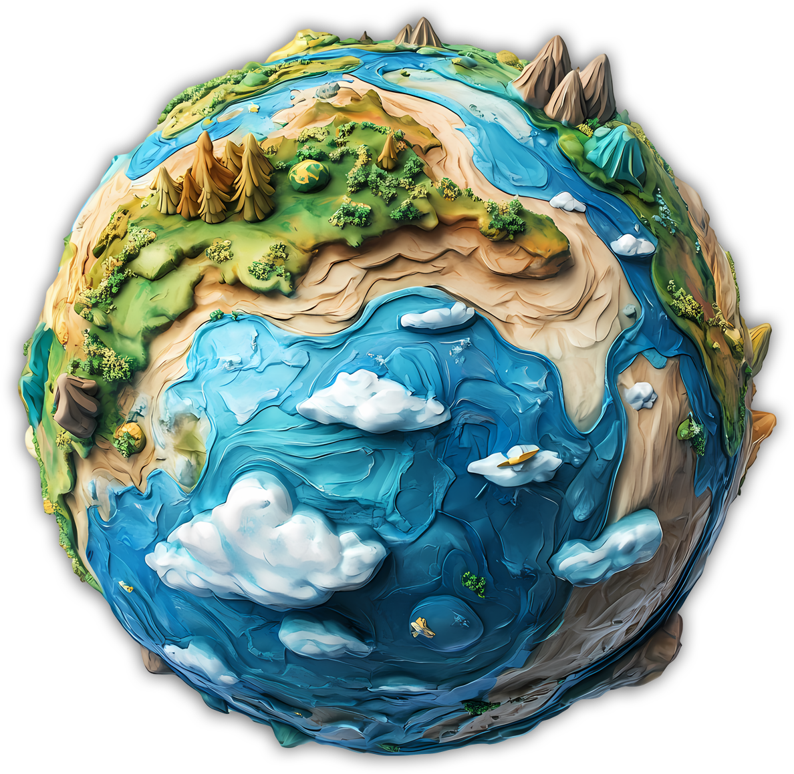

Connecting
Environmental Science,
Engineering and Technology

Connecting
Environmental Science,
Engineering and Technology
Tridel Technologies
Tridel Technologies specialises in end-to-end Marine, Environmental survey and monitoring solutions
We build Manned & Unmanned Survey Platforms, Buoys, and Monitoring systems
Tridel Technologies provides turnkey solutions to customer specific problems, system integration, deployment, data analytics, and system maintenance
We also deliver survey projects in Hydrographic value chain as per IHO standards